What is Ryder?
Ryder is a safety-focused bike computer system designed to make cycling safer and more accessible. Unlike expensive commercial bike computers ($600+) with complex, distracting interfaces, Ryder delivers essential safety features and ride data through a simple two-part system.
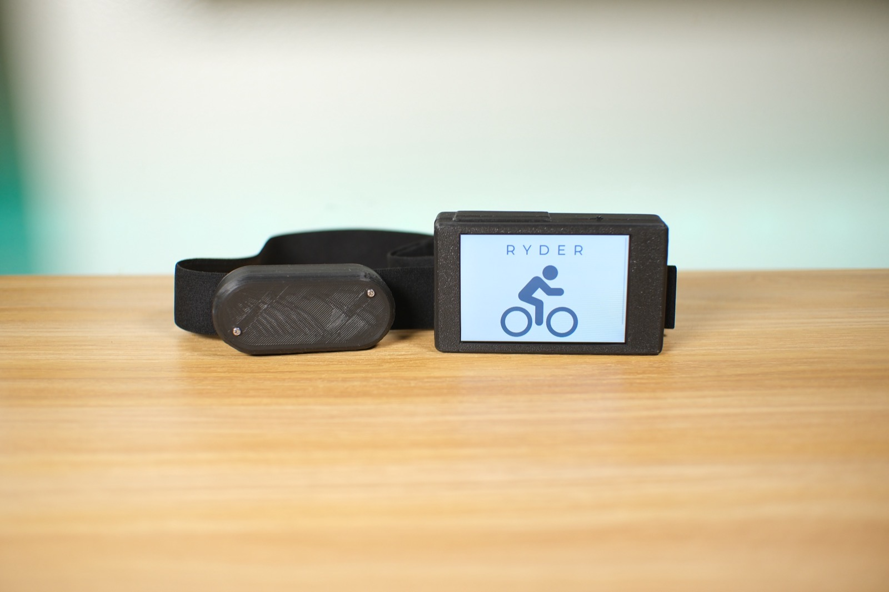
The system
Handlebar unit
- 3.5″ touchscreen with real-time speed, GPS position, tilt/turn angles
- One-touch emergency call with cellular location sharing
- Peer connectivity monitoring (alerts if riding partner disconnects)
- Built-in GPS and LTE cellular communication
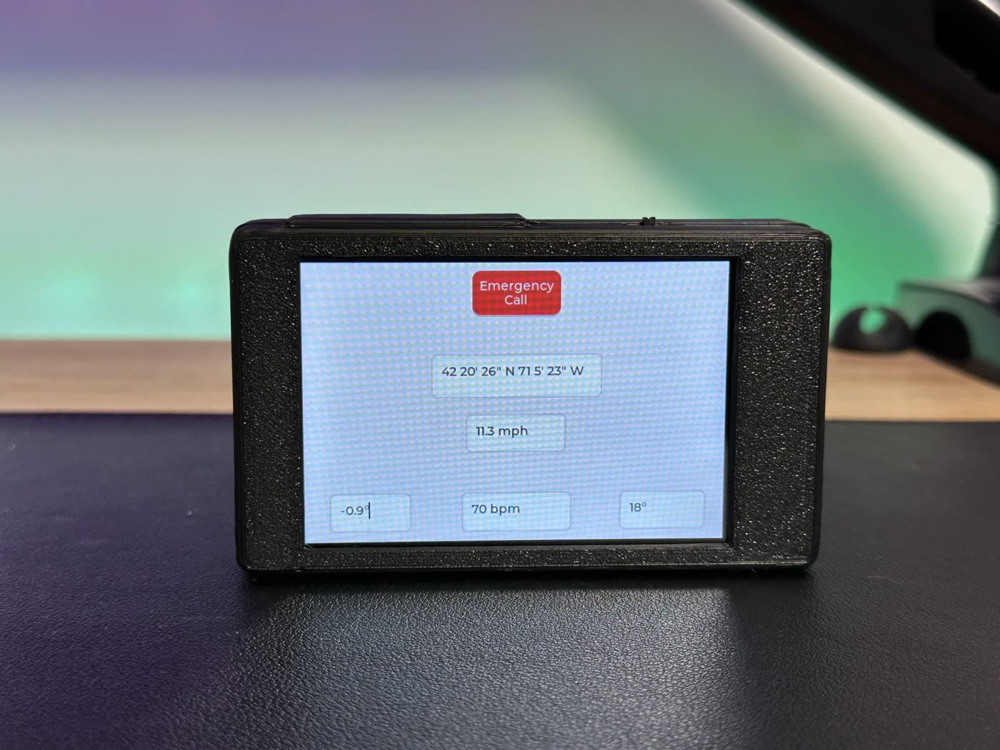
Wireless ECG chest strap
- Real-time BPM transmitted to main display via Bluetooth
- Compact, low-profile design
- Medical-grade heart rate monitoring via ECG electrodes
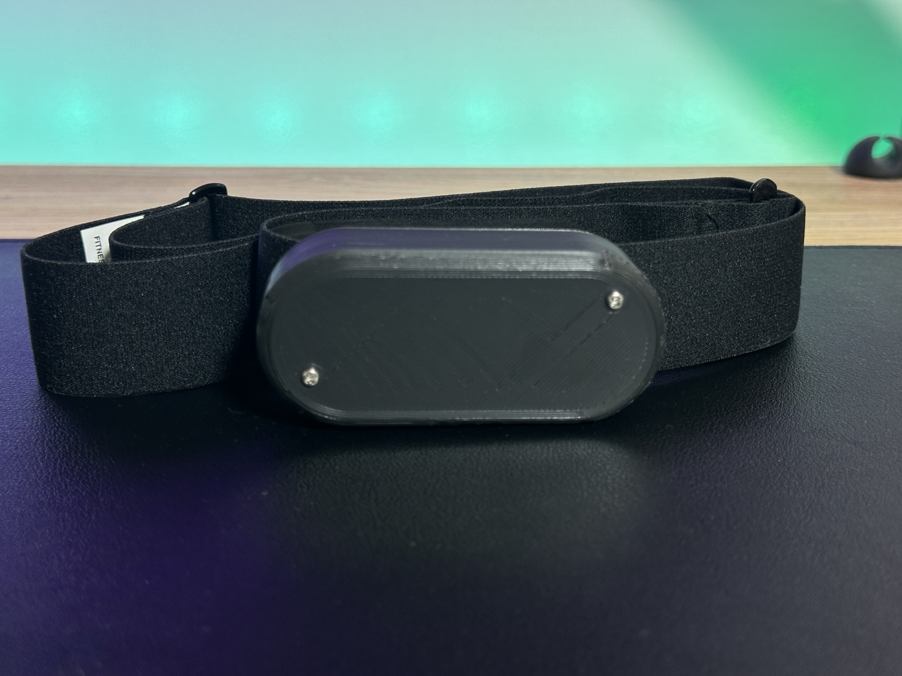
Key features
Emergency Communication: Cellular alert sends GPS coordinates to emergency services, updating every 30 seconds. Works in areas where smartphones often fail due to LTE CAT-M1/NB-IoT capability.
Peer Safety: Monitors Bluetooth connections between riders. Alerts group if someone falls behind or loses connection, sharing their last known GPS location.
Accurate Tracking: Reed switch speed sensor and GPS provide reliable positioning (0.756 m stationary accuracy, 4.35 m moving accuracy). IMU captures tilt and turn angles for complete motion awareness.
True Biometric Monitoring: Unlike optical sensors that struggle during exercise, the ECG chest strap provides clinical-grade heart rate accuracy through differential electrode measurement.
Target users
New cyclists, families with members with developmental disabilities, commuters, and recreational riders who need safety features and essential metrics without overwhelming complexity or high cost.
My contributions
Main board redesign (Rev2): miniaturization & integration
Led the complete hardware redesign from a modular development board to a production-ready integrated system, achieving ~60% size reduction to 98 mm × 55 mm.
Component integration
Integrated previously external modules directly onto the PCB as individual ICs:
- TXS0102 bidirectional level shifters for voltage translation
- ESP32-S3-N16R8 microcontroller (dual-core, 240 MHz)
- SIM7000G GPS/cellular module with LTE CAT-M1/NB-IoT
- ICM-20948 9-axis IMU (SPI interface)
- 3.5″ TFT LCD with capacitive touch controller
- DRV2605 haptic motor driver
- MAX17048 fuel gauge
- MIC29302WU LDO regulator for 3.8 V power rail
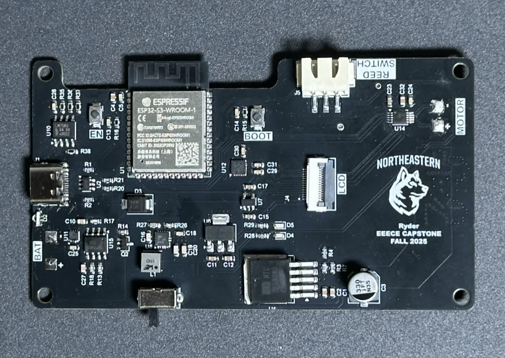
PCB architecture
- Implemented power management with MIC29302WU LDO regulator for dedicated 3.8 V rail serving SIM7000G analog circuits
- Designed 4-layer PCB stackup with dedicated ground planes for signal integrity in dense layout
- Integrated previously external modules (SIM7000G GPS/Cellular, haptic driver, IMU) directly as individual ICs
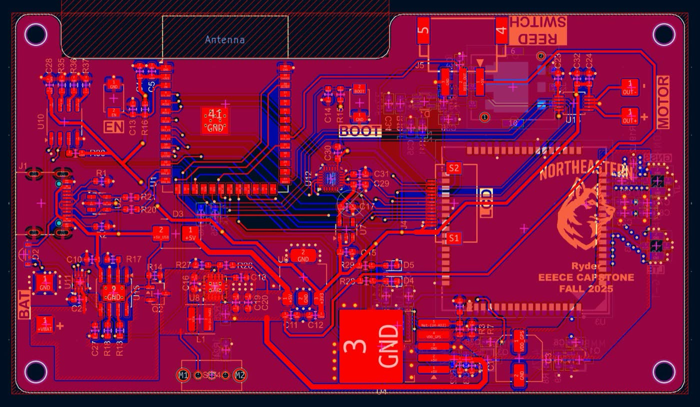
RF circuit design
The cellular/GPS functionality required careful RF implementation:
- Calculated and routed 50 Ω impedance-matched traces from SIM7000G to antenna connector
- Used specific trace widths based on 4-layer stackup dielectric constant
- Minimized trace length and eliminated vias in RF path to reduce signal loss
- Implemented ground plane stitching with via fencing around RF section
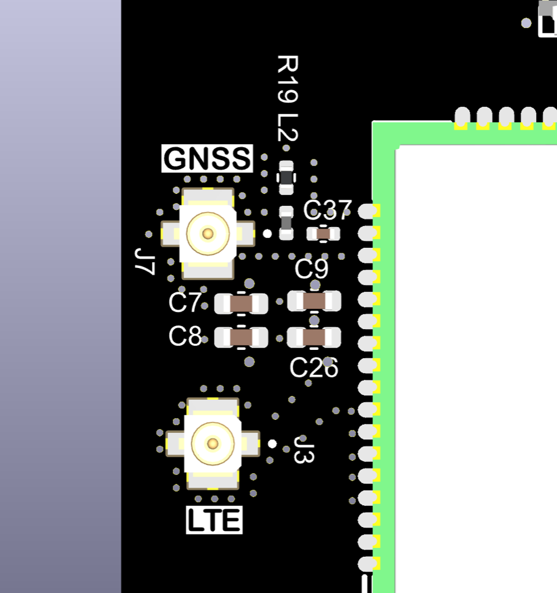
ECG chest strap: complete system design
Designed and implemented a fully integrated wireless biometric monitoring system.
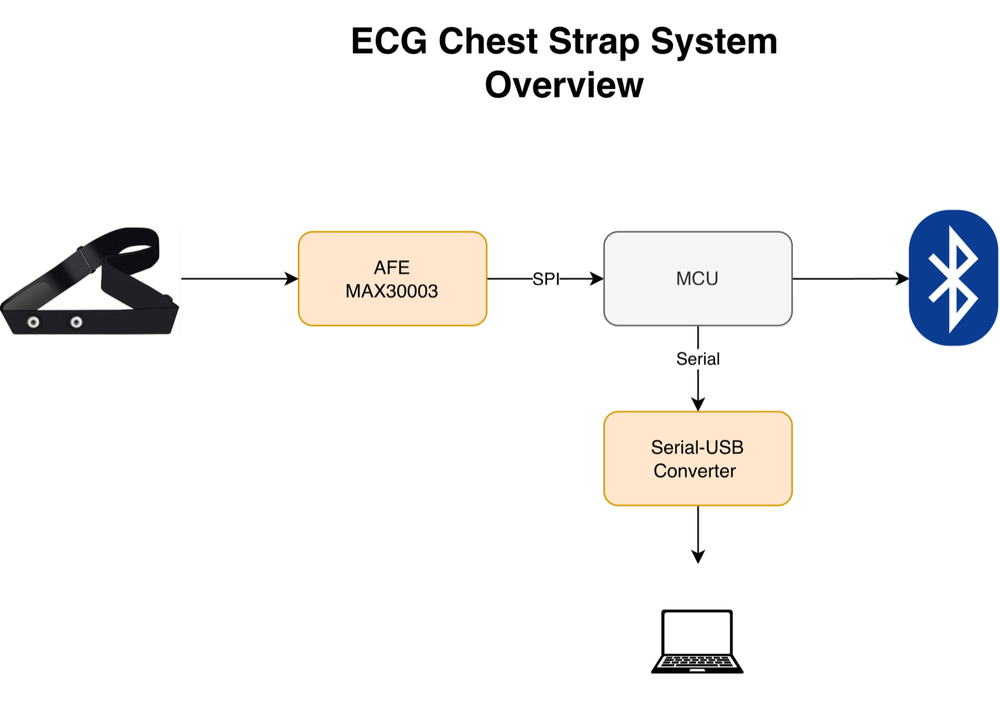
Hardware design
- Designed compact oval PCB (77 mm × 32 mm) to fit standard 45 mm-spaced electrode snap connectors
- Selected and integrated STM32WB05KZV microcontroller for native Bluetooth LE support and low power consumption (64 MHz, sufficient for real-time DSP)
- Integrated MAX30003 biopotential analog front-end with complete signal chain: differential amplification, programmable gain, 18-bit sigma-delta ADC
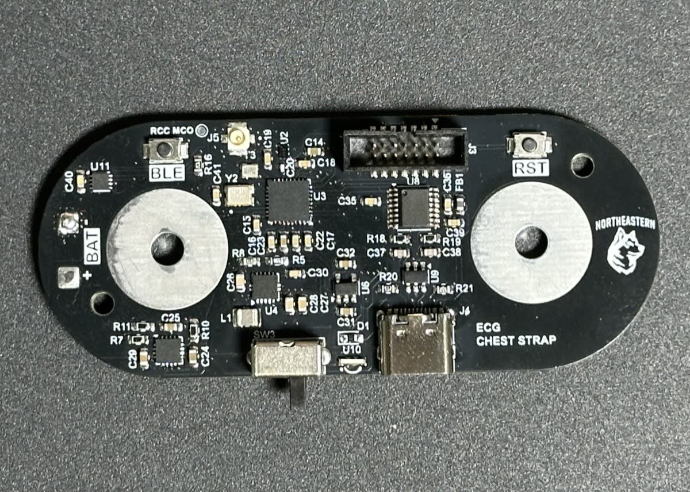
RF design
- Achieved reliable wireless communication with main board
- Implemented 2.4 GHz Bluetooth LE radio circuitry
- Used external chip antenna connected via U.FL connector rather than PCB antenna to reduce first-revision risk
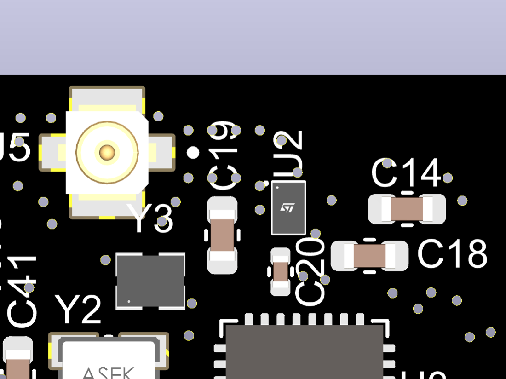
Signal processing implementation
- Configured AFE with 3.5 Hz high-pass filter to eliminate motion artifacts and baseline wander
- Implemented 40 Hz digital low-pass filter for high-frequency noise attenuation
- Developed R-R peak detection algorithm for real-time heart rate calculation from ECG waveform
- Achieved clean ECG signal capture at 128 samples/second
Firmware architecture
- Developed modular firmware for sensor acquisition, DSP, and BLE communication
- Implemented real-time heart rate calculation from R-R intervals
- Designed dual-interface capability: Bluetooth to main board and serial output for debugging
Mechanical design: enclosures
Main board enclosure
- Optimized for 3D printing with appropriate tolerances
- Designed custom enclosure for 100 mm × 60 mm Rev2 board
- Incorporated cutouts for 3.5″ display, USB-C connector, and power switch
- Designed mounting features for handlebar attachment
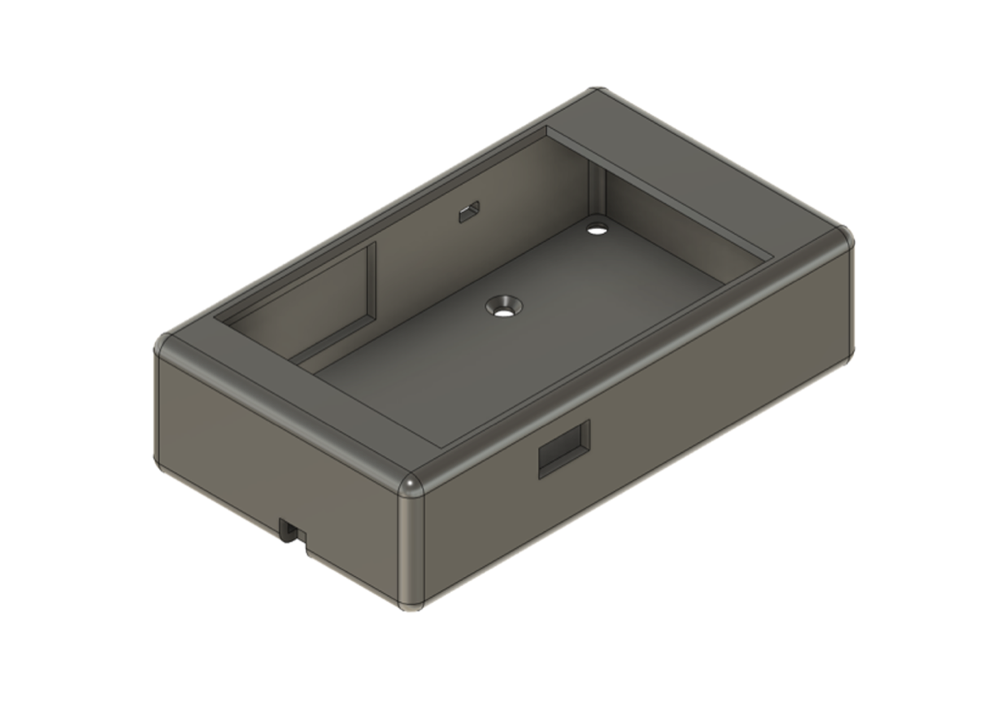
ECG chest strap enclosure
- Designed battery compartment access
- Designed low-profile case for 77 mm × 32 mm oval PCB
- Integrated snap connector cutouts for ECG electrodes
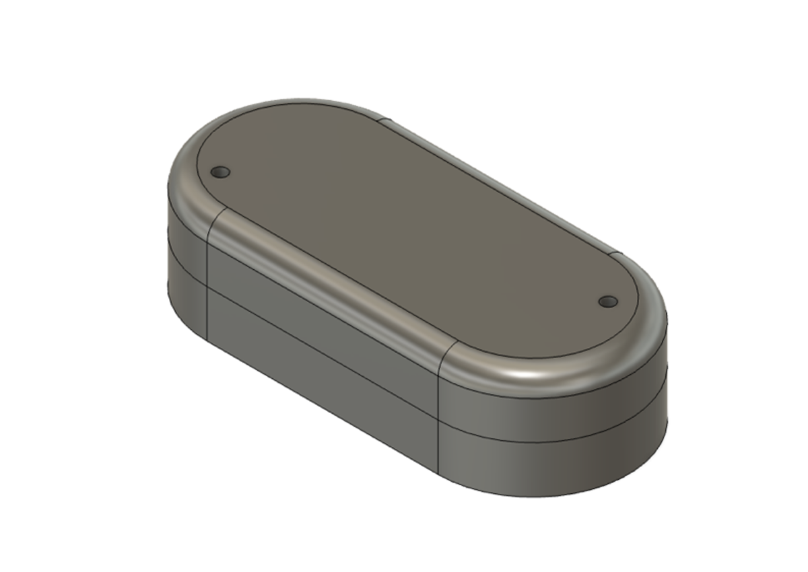
Results & validation
GPS performance
- Successfully demonstrated real-time position tracking during bike ride
- Stationary Accuracy: 0.756 m RMSE, excellent for low-cost GPS
- Moving Accuracy: 4.35 m RMSE during straight-line test
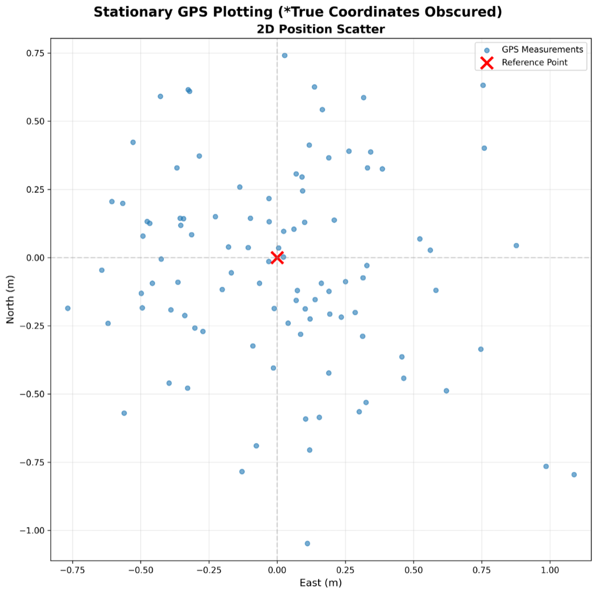
ECG signal quality
- Clean ECG waveform capture at 128 SPS
- Reliable R-R peak detection for heart rate calculation
- Stable Bluetooth transmission to main board
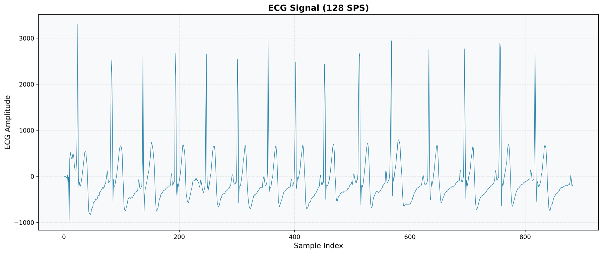
System integration
- Successful wireless communication between ECG chest strap and main board
- Real-time display of speed, GPS coordinates, tilt angle, turn angle, and heart rate
- Functional emergency call feature with cellular connectivity
- Peer-to-peer connection monitoring with alerts